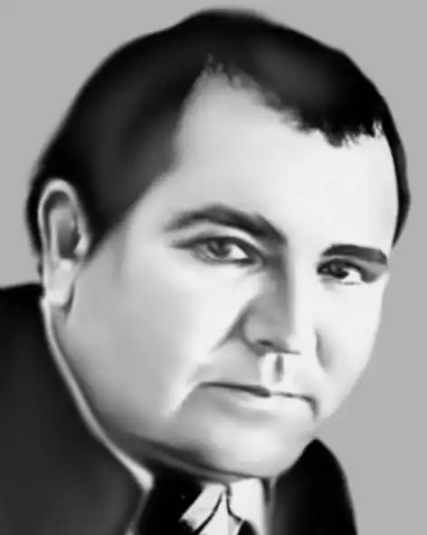

Дмитро Герасимчук народився 12 вересня 1942 року в селі Козирянах, нині Лівинецької громади Дністровського району Чернівецької области України.
Закінчив Чернівецький (1960) та Львівський (1967) університети. У 1959—1962 роках працював у періодичних виданнях Чернівеччини.
Від 1967 — у Львові на посадах: власкор газети "Літературна Україна", відповідальний секретар Львівської організації НСПУ. Помер 4 липня 2001 року у Львові.